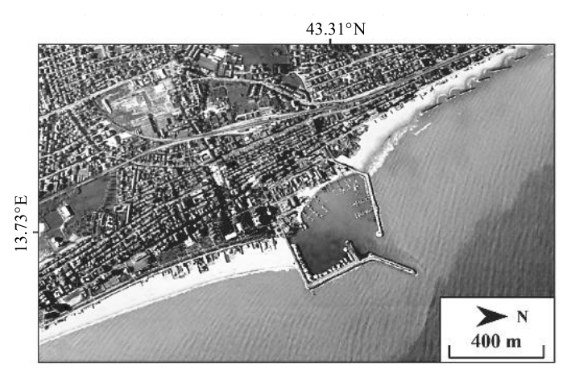

分科測驗地理歷屆試題
開卷有益收錄分科測驗「地理」民國 111–114 年的歷屆試題，共 4 份考卷、173 題，其中 173 題附有逐題詳解。每一份考卷都有獨立頁面，可以整卷看題目與答案，也可以直接線上作答。
線上練習 地理 →
本科概況
| 科目 | 地理（分科測驗） |
|---|
| 題數 | 173 題 |
|---|
| 考卷份數 | 4 份 |
|---|
| 涵蓋年份 | 民國 111–114 年 |
|---|
| 詳解 | 173 題（100%） |
|---|
| 資料來源 | 大考中心 分科測驗歷年試題（依著作權法 §9，考試試題不受著作權保護） |
|---|
| 費用 | 免費，不需註冊，無廣告 |
|---|
自然地理、人文地理、地理技術，重地圖與統計圖判讀。
歷年考卷（4 份）
點任一年度可看整份試題與標準答案。
題目長什麼樣
以下自本科題庫抽 5 題示例，完整題目請看上方各年度考卷。
第 1 題
世界棒球經典賽將於2026 年3 月舉行分組預賽,某參賽國球迷貼文表示:「希望我國與
日本、韓國分在同組,因為這些國家球員也有漢字的名字,比較容易記住,可以吸引平常
較沒參與棒球活動的朋友一同觀賽;若是與古巴、荷蘭等國同組,因球員名字只有音譯而
較難記住,很多人就沒興趣了。」上述球迷的觀點,最適合以下列哪個概念來解釋?
- （A）文化圈
- （B）資訊革新
- （C）區位移轉
- （D）世界體系
答案：（A）
詳解與考點
正解：貼文把日本與韓國球員的漢字姓名視為容易辨識、能拉近觀賽者距離的共同文化線索，判準在不同國家之間存在相近的文字與文化經驗。這種由共享文化特徵形成的區域認同，最適合用文化圈說明，故選 A。
B：資訊革新著重資訊科技如何改變傳遞、溝通與生產方式；題幹的重點不是使用新科技，而是名字所反映的文化親近感。
C：區位移轉是產業、人口或活動因成本與條件變化而改變所在地，和球迷對漢字姓名的熟悉程度無關。
D：世界體系分析核心區、半邊陲區與邊陲區之間的經濟權力與分工，不能直接解釋此處的文字文化認同。
本題考點：文化圈（cultural realm）——材料若以共同文字、宗教、語言或生活習俗連結多地，優先判為文化圈；區域概念的判別（regional concepts）——先辨認題幹是在談文化相似、科技變遷、區位移動或經濟權力，再選相應概念。
第 37 題
老師認為該生所引用的案例並未完全符合PPGIS 的理念,其理由最可能是因為該計畫進行
的過程,缺乏下列何種行動?

- （A）研究人員使用GIS整合海岸土地利用資料
- （B）宣導民眾透過GIS網站查詢海岸地區風險
- （C）以GIS為平臺與權益關係人討論管理計畫
- （D）政府以GIS網站公開海岸地區景觀分區圖
答案：（C）
詳解與考點
正解：題幹中的「訪問權益關係人，將訴求與建議帶回」只做到蒐集意見；PPGIS 的核心還要讓利害關係人能在 GIS 平臺上共同討論並影響規劃。把資訊上網供查詢是單向公開，不能取代協作決策，故選 C。
A：研究人員整合海岸土地利用資料可作為分析基礎，卻不是題幹顯示缺少的環節；PPGIS 並不排斥專家整理資料。
B：題組已說明網路地圖提供民眾查詢，因此這種資訊取用已經出現。它看似有民眾參與，但沒有讓民眾與規劃者共同形成方案。
D：公開景觀分區圖也是資訊透明的做法，與題組的網路地圖相符；分辨關鍵在公開後是否有回饋、討論與決策影響。
本題考點：公眾參與式地理資訊系統（Public Participation GIS，PPGIS）——判斷是否符合時，要看民眾是否能藉地理資訊進入討論與決策，不只看資料是否上網；權益關係人（stakeholders）——把意見帶回是諮詢，能與不同群體共同協商才是實質參與；參與階梯（participation ladder）——區分告知、諮詢與共決時，判準是參與者對方案的影響程度。
第 28 題
文中貝類養殖發生收成問題的原因,最可能與當地發生下列何種事件有關?
- （A）沿岸的北大西洋暖流勢力減弱,導致海水水溫突然變低
- （B）河川集水區內飼養的牲畜糞便,導致河水細菌大量滋生
- （C）六至八月的夏季旅客入境者眾,導致廢水排放總量增加
- （D）太陽直射與暖化使得乾季拉長,導致河水自淨能力減弱
請記得在答題卷簽名欄位以正楷簽全名共 11 頁 地理考科
答案：（B）
詳解與考點
正解：題組指出 Aorere 河是 Golden 灣貝類養殖的重要用水來源，且收成期曾突然縮短。集水區牲畜糞便若隨逕流進入河川，會增加細菌污染並惡化養殖水質，貝類易因衛生風險或生長受影響而縮短可收成期間，故選 B。
A：北大西洋暖流影響的是北大西洋海域，Golden 灣位於紐西蘭，不能以此洋流減弱解釋當地貝類收成問題。
C：紐西蘭位於南半球，6 至 8 月是冬季而非夏季；題幹也沒有提供旅客增加或廢水排放的資料。
D：題組已說河流水位的季節變化不明顯，且問題是突然出現的收成異常，沒有支持乾季拉長、河川自淨能力下降的證據。
本題考點：集水區污染（watershed pollution）——上游畜牧排泄物進入河川時，須追蹤其對下游養殖與飲用水水質的影響；貝類養殖水質（shellfish aquaculture water quality）——貝類會累積水中污染物，判斷收成異常時優先檢視流域污染源。
第 20 題
根據題文,陸續增設的海水淡化廠最可能設置於哪些縣市?
甲、花蓮縣 乙、臺北市 丙、新竹市 丁、臺南市 戊、高雄市
- （A）甲乙丙
- （B）甲丁戊
- （C）乙丙丁
- （D）丙丁戊
答案：（D）
詳解與考點
正解：本題要把題幹的「未來工業高度發展」與沿海水源補充需求連在一起。新竹市、臺南市與高雄市都有重要科技或工業聚落，用水需求大且可規劃以海水淡化增加供水韌性，因此丙、丁、戊最符合，故選 D。
A：甲乙丙含花蓮縣與臺北市，兩地不如臺南市與高雄市同時符合題幹所強調的高工業用水需求，組合不完整。
B：甲丁戊雖有臺南市與高雄市，但花蓮縣取代了同樣具高科技產業用水需求的新竹市，不是最可能的配置。
C：乙丙丁含新竹市與臺南市，卻漏掉高雄市；題幹的工業發展線索不足以支持以臺北市取代高雄市。
本題考點：工業用水需求（industrial water demand）——題幹若強調高科技或重工業集中發展，應連結穩定大量供水需求；海水淡化（seawater desalination）——沿海高用水地區可將海淡視為補充水源，但選址仍須同時看產業規模與地理條件。
第 8 題
布蘭登線(或稱布朗特界線)以區域經濟發展的差異,將世界劃分為南、北方區域,表1
為甲~戊五個國家的商品出口資料,下列哪些最可能是南方區域的國家?
表1
國家 前五大商品出口值占該國出口值百分比(%)
甲 機電29.0 運輸20.0 化學12.8 金屬7.1 橡膠5.2
乙 礦產29.0 燃料18.9 動物 5.9 金屬3.9 植物3.1
丙 食物74.7 植物13.0 運輸 5.7 木材2.0 金屬1.0
丁 燃料92.4 運輸 3.2 礦石 2.8 機電0.4 木材0.3
戊 紡織57.2 獸皮 9.4 製鞋 8.9 機電4.6 植物3.7
- （A）甲乙丙
- （B）甲丙丁
- （C）乙丁戊
- （D）丙丁戊
答案：（D）
詳解與考點
正解：布蘭登線的南方區域多見初級產品或勞力密集產品比重高、產業升級較不足的出口結構。表中丙以食物、植物為主，丁以燃料為主，戊以紡織、獸皮與製鞋為主，最符合此特徵，所以南方區域為丙、丁、戊，故選 D。
A：甲的機電、運輸與化學產品比重高，較符合工業化程度高的北方區域，因此把甲列入即不成立。
B：B 同樣把甲列入，且漏掉出口結構明顯偏向勞力密集製造的戊，與判準不合。
C：乙雖有礦產與燃料出口，但資源型出口本身不足以判定為南方區域；此組合又遺漏以食物、植物為主的丙。
本題考點：布蘭登線（Brandt Line）——依經濟發展程度區分全球北方與南方，並非單純依南北緯度；出口結構（export composition）——初級產品與勞力密集品比重高，常反映產業附加價值較低；資源型經濟（resource-based economy）——有礦產或燃料出口不必然代表低發展，仍要看整體產業結構。
分科測驗其他科目
題目與標準答案出自大考中心 分科測驗歷年試題（依著作權法 §9，考試試題不受著作權保護），依《著作權法》第 9 條為非著作權標的，得自由利用；
本專案撰寫的詳解以 CC0 1.0 貢獻至公眾領域。詳解為 AI 整理的學習輔助，並非官方標準答案。